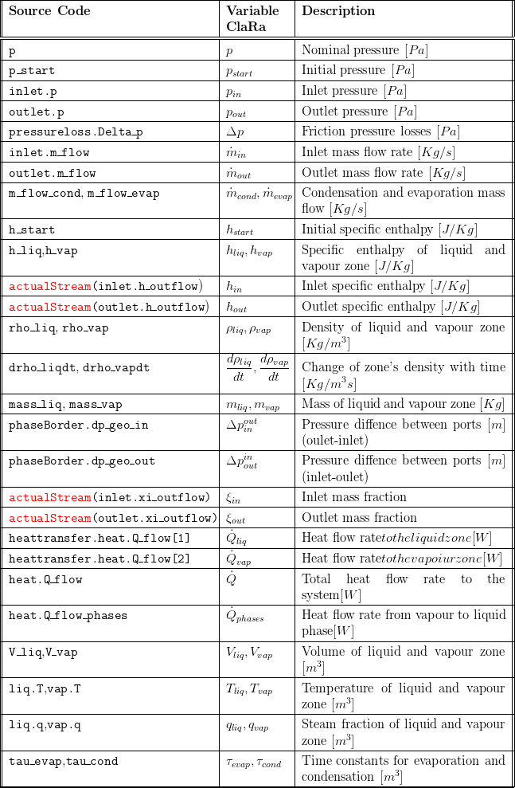
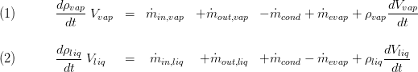
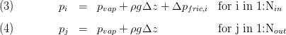
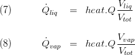
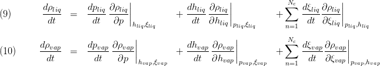
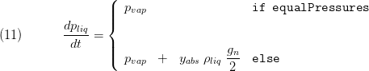
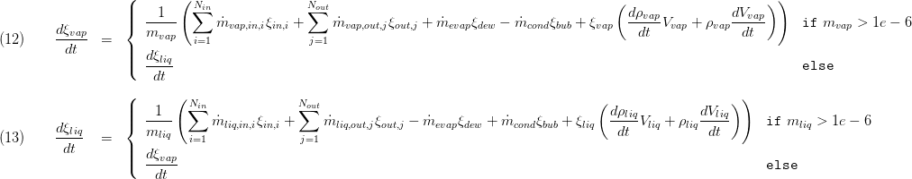
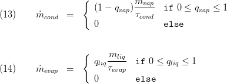
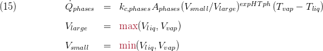

VolumeVLE L3_TwoZones
Created Monday 22 October 2012
Basic two-zonal model taking heat and mass storage as well as convective heat transfer and pressure differences due to friction and geostatic effects for each of the zones into account.
1. Purpose of Model
The model is recommended when two distinct phases (vapour and liquid) are present and non-ideal phase interaction is expected. Both phases may be (independent from each other) subcooled, superheated and in the two-phase region. This is especially the case in condensing heat exchangers and pressurized storage tanks. The model is used as a basic model to form various components like:
- Compact heat exchangers e.g. condensers, preheaters
- Storage tanks, e.g. deaerators, stream drums
2. Level of Detail, Physical Effects Considered and Physical Insight
2.1 Level of Detail
Referring to Brunnemann et al. [1], this model refers to the level of detail L3 because the system is modelled with the use of balance equations for two distinct zones, namely the zone of liquid and vapour volume.
2.2 Physical Effects Considered
- Conservation of Mass
- Simplified conservation of momentum (no advection term, steady state)
- Conservation of Energy
- Reverse flow
- Heat Transport due to convection
- Pressure loss due to friction.
- non-ideal phase separation and mixing based on phenomenological model ideas
2.3 Level of Insight
Heat Transfer
- ControlVolumes:Fundamentals:HeatTransport:VLE HT:Constant L3 ypsDependent
- ControlVolumes:Fundamentals:HeatTransport:VLE HT:Ideal L3
Pressure Loss
- ControlVolumes:Fundamentals:PressureLoss:Generic PL:LinearParallelZones L3
- ControlVolumes:Fundamentals:PressureLoss:Generic PL:NoFriction L3
- ControlVolumes:Fundamentals:PressureLoss:Generic PL:LinearSerialZones L3
Spacial Distribution
- ClaRa:Basics:ControlVolumes:Fundamentals:SpatialDistributionAspects:RealSeparated
- ControlVolumes:Fundamentals:SpatialDistributionAspects:RealMixed
3. Limits of Validity
- Averaging assumption within the zonal volumes violated.
- The equations imply that the outlet states equal the states in the balance equations - Not true for large volumes and high gradients.
4. Interfaces
4.1 Physical Connectors
Basics:Interfaces:FluidPortIn inlet
Basics:Interfaces:FluidPortOut outlet
Basics:Interfaces:HeatPort a heat
5. Nomenclature

6. Governing Equations
6.1 System Description and General model approach
The general model structure is defined as illustrated below: Two distinct volumes are considered referring to the liquid and vapour volume in the system. The two volumes can exchange mass and heat between each other. Furthermore, heat can be transferred with the surrounding which is handled using replaceable models, see section 2.3 Heat Transfer. Pressure losses are also addressed with replaceable models, see section 2.3 Pressure Loss. The allocation of the entering and outgoing enthalpy flows takes phenomenological approaches for separating and mixing into account, see section 2.3 Spacial Distribution. The location of the zonal pressure can either be either equal (at the liquid/vapour surface) or different (vapour pressure at the surface while the liquid pressure is at the liquid zone's half filling level), see subsection 6.2 Location of Pressure States.

6.2 Governing Model Equations
Conservation of Mass
The mass balance for each of the zones considers evaporation and condensation mass flow rates, volume changes and mass flows through the inlet and outlet connectors. These mass flows are allocated to the vapour and liquid zone according to the replaceable model PhaseSeparation, see section 2.3 Spatial Distribution. The balance equations read:

Conservation of Momentum
The momentum balances applied for each of the ports allow the calculation of pressure distribution at the model boundaries. Two major simplifications are applied:
- steady state
- neglect of momentum flows through the ports

Conservation of Energy
The energy balances for both zones consider entering and leaving enthalpy flow rates as well as energy transport between the zones due to heat and mass transfer. The mass flows entering and leaving are allocated to the vapour and liquid zone according to the replaceable model PhaseSeparation, see section 2.3 Spatial Distribution. Please note, there are three terms in the equations below that take the derivatives of volume, density and pressure into account. These terms are derived from the total derivative of the inner energy of the zone and appear here due to the special choice of state variables as discussed in Basic Concepts of Modelling.

In the above equations two cases are distinguished to handle vanishing zones, i.e. if we have only liquid or only vapour in our component. In these cases the enthalpy of vanishing zone follows the other remaining zone's enthalpy. This concept allows to simulate completely filled or void tanks which is an important case for certain components like start-up bottles and cyclone separators. The heat flow rates to the surrounding are determined by applying a replaceable heat transfer model, see section 2.3 Heat Transfer. The ratio of heat transferred to each of the zones is determined according to the volume ratio of the zones, .i.e.

The model's density is taken as an explicit function of the states, its total derivative should be used for completeness of the model given by:

Location of Pressure States
The liquid and vapour state are defined by the pressure and enthalpy at the respective zones. While the spec. enthalpy and the density of the zones is defined by the energy and mass balance equations for each of the zones the pressure of the zones are connected to each other via algebraic equations defining the relative position of the two states. Depending on the parameter equalPressures the liquid and vapour zone pressure can be either equal or not:

Chemistry
No chemical reactions are considered leading to the following  species mass balances for the two zones. Note that these equations are only valid (and evaluated) when a mixture of fluids is used i.e. the number of species
species mass balances for the two zones. Note that these equations are only valid (and evaluated) when a mixture of fluids is used i.e. the number of species  .
.

Mass Transfer between the Zones
The evaporation and condensation mass flow rates are determined according to the vapour mass fraction in the liquid zone and the liquid fraction in the vapour zone introducing two time constants for evaporation and condensation, respectively. These can be tuned by the user and affect strongly the behaviour of the model. See [2] for discussion of these parameters.

Heat Transfer between the Zones
The model for the inter-phase heat transfer assumes constant values for heat phase surface and heat transfer coefficient:

Summary
A summary is available including the following:
- an outline record:

- Basics:Records:FlangeVLE inlet[N_inlet], outlet[N_outlet]
- Basics:Records:FluidVLE L34 fluid
7. Remarks for Usage
This model shall be applied only if there is only one inlet and one outlet. If a number of inlet flows shall be mixed in the volume (e.g. in a drum) VolumeVLE L3 TwoZonesNPort shall be preferred.
9. References
[1] Johannes Brunnemann and Friedrich Gottelt, Kai Wellner, Ala Renz, André Thüring, Volker Röder, Christoph Hasenbein, Christian Schulze, Gerhard Schmitz, Jörg Eiden: "Status of ClaRaCCS: Modelling and Simulationof Coal-Fired Power Plants with CO2 capture", 9th Modelica Conference, Munich, Germany, 2012
[2] Sebastian Meinke and Friedrich Gottelt, Martin Müller, Egon Hassel: "Modeling of Coal-Fired Power Units with ThermoPower Focussing on Start-Up Process", 8th Modelica Conference, Dresden, Germany, 2011
10. Version History
Date - Version - Description of changes - author/revisor
- 25.06.2013 - v0.1 - initial implementation of the model - Friedrich Gottelt, XRG Simulation
- 30.04.2016 - v1.1.1 - improved numerical robustness (handling of two phase inlet flows and allowance of different pressures in the zones) - F. Gottelt, T. Hoppe, XRG Simulation GmbH
- 05.09.2016 - v1.2 - improved numerical robustness if expert setting equalParameters==false is chosen - F. Gottelt, T. Hoppe, XRG Simulation GmbH
Backlinks: ClaRa:Components:MechanicalSeparation:FeedWaterTank L3 advanced ClaRa:Components:MechanicalSeparation:FeedWaterTank L3 ClaRa:Components:HeatExchangers:HEXvle2gas L3 2ph BU simple ClaRa:Basics:ControlVolumes:FluidVolumes:VolumeVLE L3 TwoZonesNPort